2026-09-28 · Windows / Godot · 实际资产与实机截图
玉米地首版 · 美术对照
检查基线是温暖的河南农村童年、风格化卡通写实、清楚的大块形体与适度旧物细节。下方游戏画面来自本地 GPU 捕获；概念图只作为方向参考。
当前整体美术尚未达到概念图完成度。棚屋、板车与树干已走真实 Meshy → Blender → Godot 流程；树冠因生成缺失由 Blender 补建。地面、玉米组合、小道具及敌人仍有原型质感。推车和翻越动作仍需完善接触与位移同步。
原方向与游戏镜头
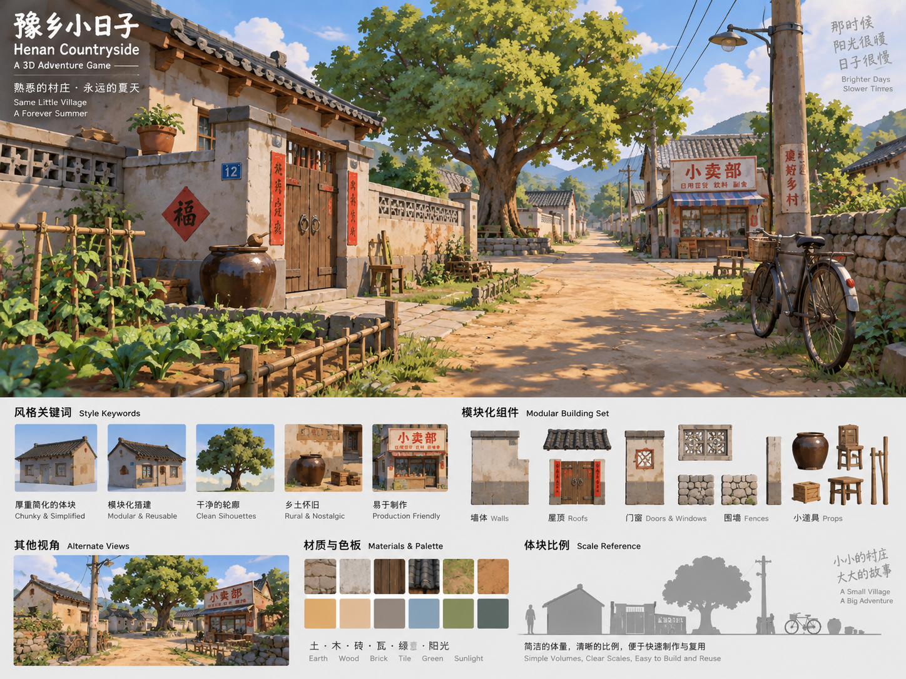
用户原始方向：暖阳、自然绿色、旧木与土路，形体简化但有材质层次。
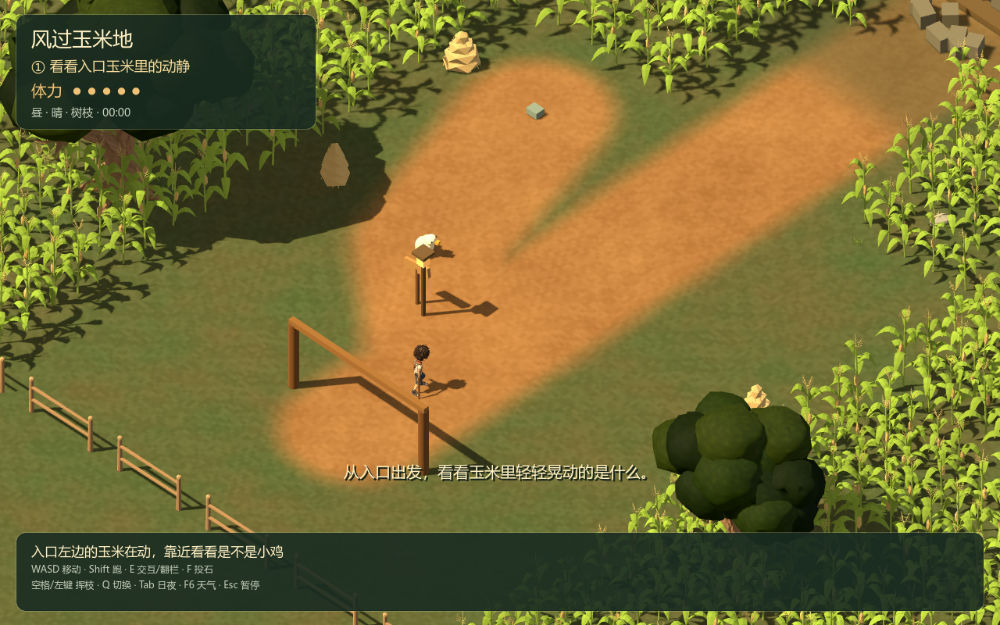
正式斜俯视镜头：检查主角、玉米、地表和界面共同出现时的阅读效果。
已投入 Meshy 的独立参考图
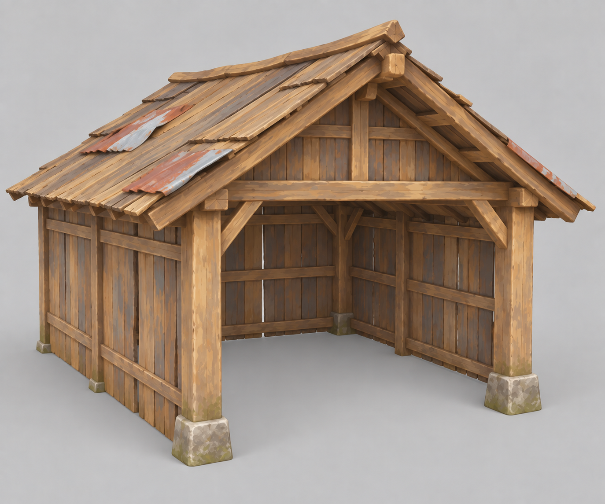
农具棚：旧木板、清晰开口、暖棕色。
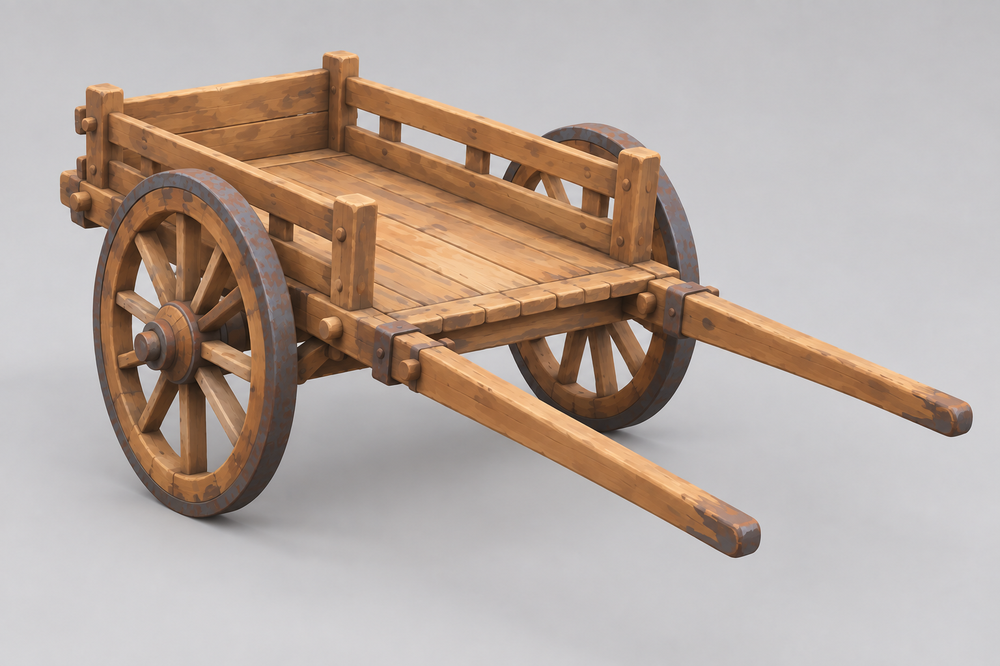
板车：明确的车轮、斗体与把手。
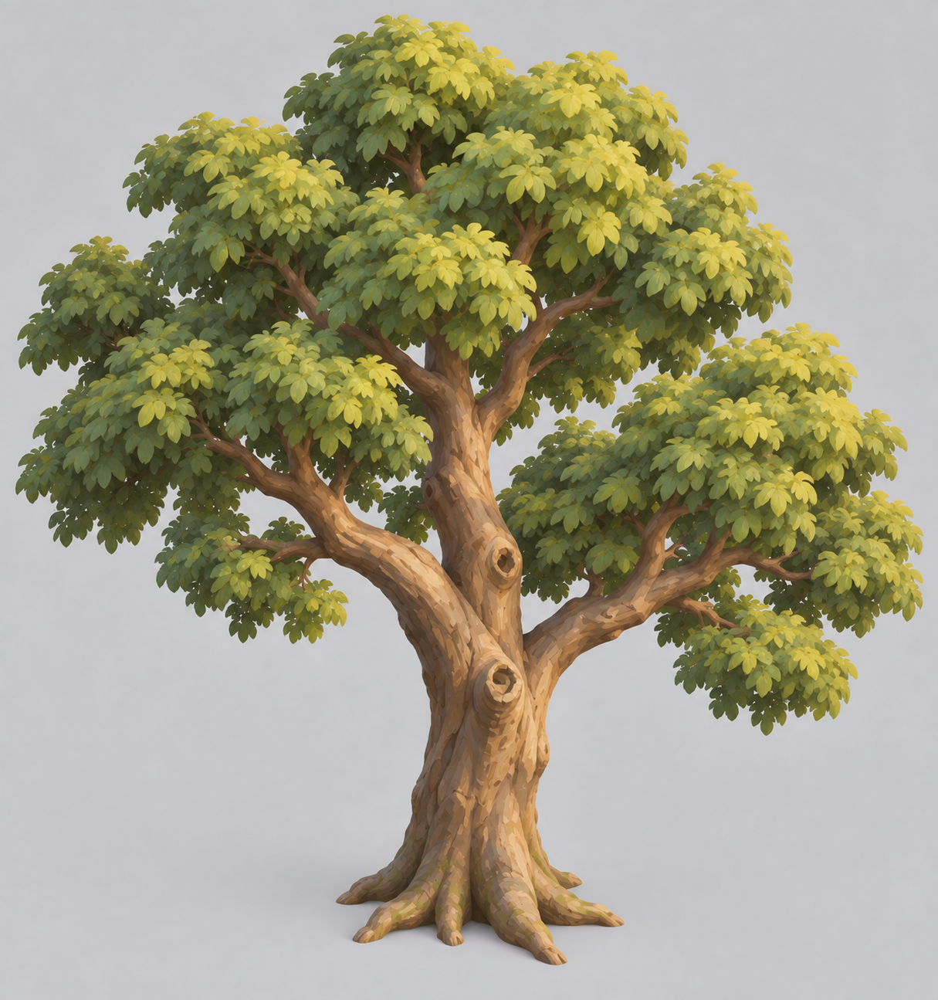
树木：夏季茂盛树冠与厚实树干。生成结果缺冠，已补建。
模型落地与天气
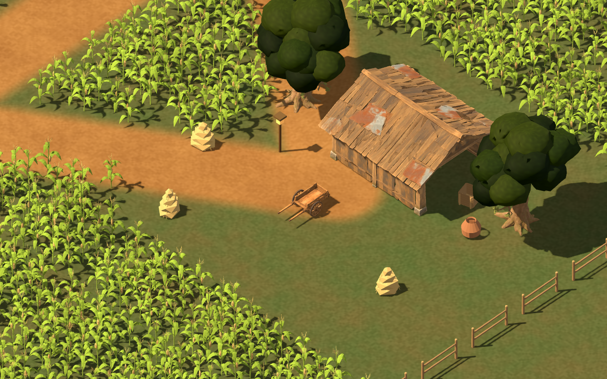
晴天农具区：模型尺度、木材纹理、树冠层次与暖色光照。
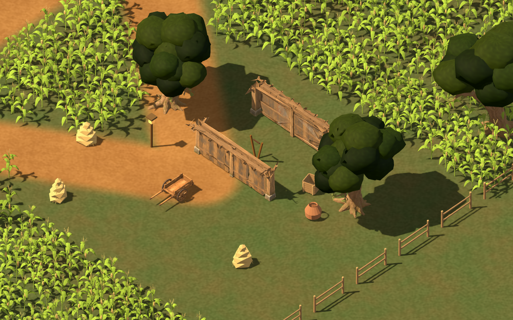
进入棚内后的屋顶隐藏：保证俯视交互可见，碰撞单独保留。
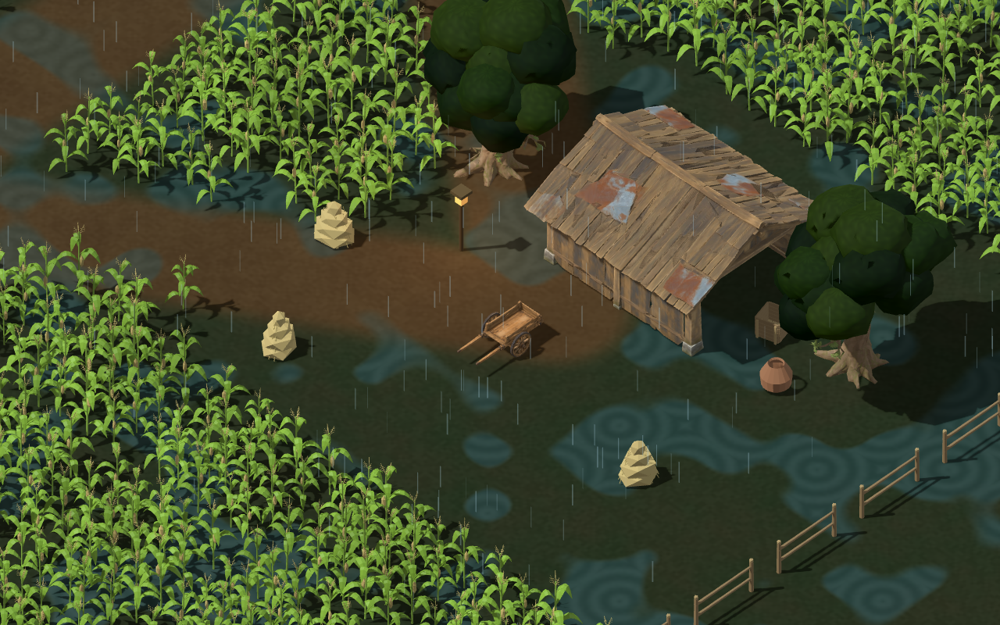
雨天：雨丝、湿润反馈与物体辨识度。
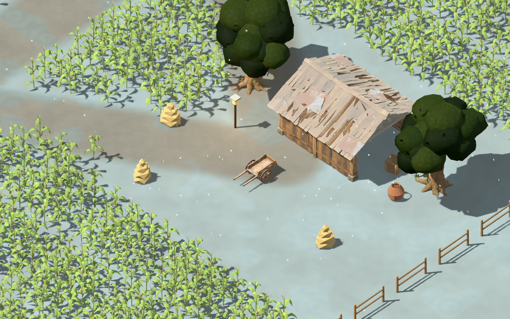
雪天：保留路面层次与道具轮廓；属于季节预览。
动画来源与修整
保留原角色模型与四段已验证动画，从 Meshy 同一骨架补入受伤、拾取、交互、推车、翻越。Blender 裁剪拾取冗余片段、整理根位移和播放节奏，再由 Godot 真实事件触发。当前骨架没有独立手指骨，不能据此宣称握持与手物接触已精修完成。
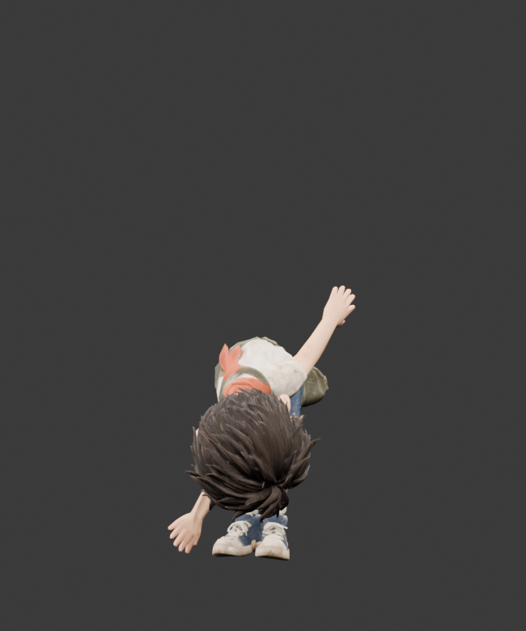
Blender 拾取动作采样：检查弯腰幅度与服装变形。
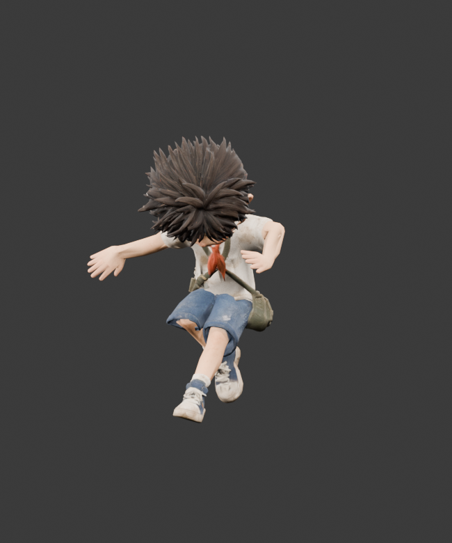
Blender 翻越动作采样：当前作为可用原型继续验证。
查看三种天气 × 日夜六态 · 最终 QA 记录 · 真实任务与积分记录